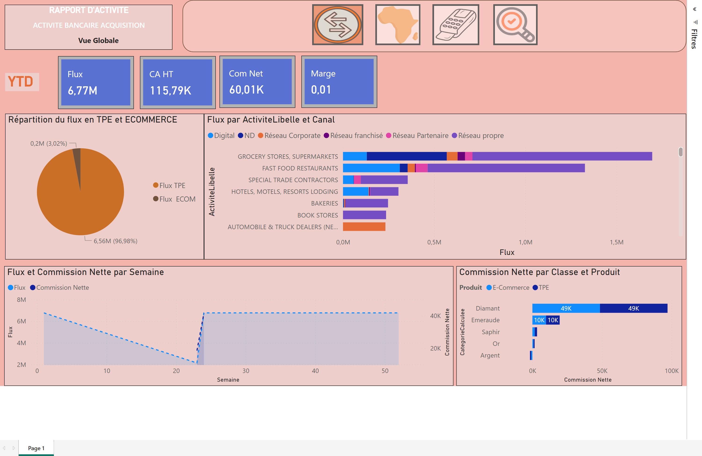

Reporting d'activité acquisition bancaire
Rapport Power BI connecté à un modèle SQL Server Analysis Services, pour piloter l'activité monétique (TPE et e-commerce) d'un réseau de commerçants.

Objectif
Donner aux équipes commerciales une vue unique sur le flux réalisé par les commerçants, les revenus (CA HT, commission nette, marge) et la qualité des autorisations, avec un suivi hebdomadaire.
Architecture
Données transactionnelles
SQL Server→ Modèle analytique
SSAS→ Rapport interactif
Power BI
SQL Server→ Modèle analytique
SSAS→ Rapport interactif
Power BI
Contenu du rapport
- Vue globale : flux réalisé, CA HT, commission nette, marge, commerçants actifs et inactifs ; répartition TPE / e-commerce ; flux par secteur d'activité et canal ; tendance hebdomadaire.
- Vue consolidée par enseigne : flux national et international par réseau de cartes, nombre de terminaux, commission et évolution.
- Vue par semaine : détail jour par jour et arbre de décomposition (classe commerçant, placement, activité) pour expliquer les variations.
- Vue par autorisations : autorisations et pré-autorisations, taux d'acceptation et motifs de refus.
- Navigation par boutons entre les vues et filtres communs : commerçant, état d'activité, commercial, placement, canal, ville, dates de création et de transaction.
Ce que j'ai réalisé
- Conception du modèle analytique dans SSAS et des mesures DAX (flux, revenus, marge, segmentation des commerçants par classe).
- Construction des quatre vues Power BI, de la navigation et des filtres croisés.
- Mise en place d'un suivi hebdomadaire pour détecter rapidement les baisses d'activité.
Ce projet repose sur des données bancaires réelles et confidentielles : seuls des indicateurs globaux sont présentés ici, sans démonstration vidéo ni fichier source.